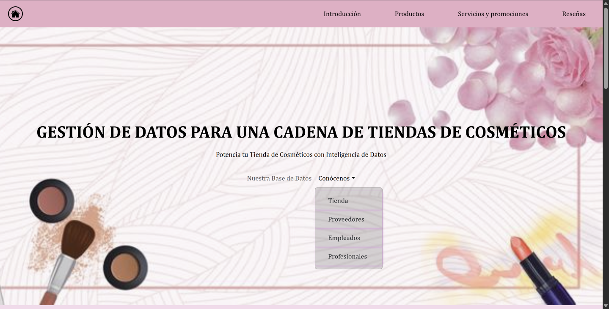
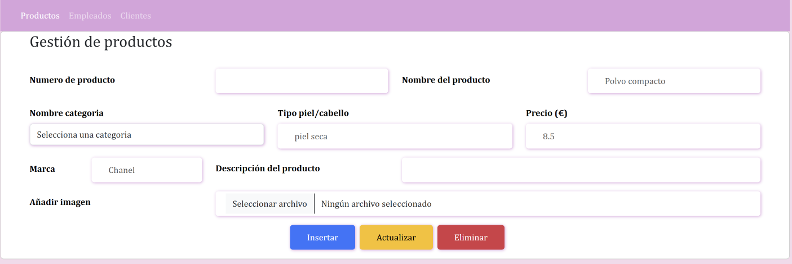
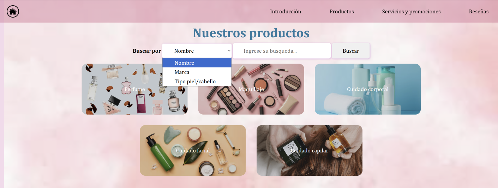
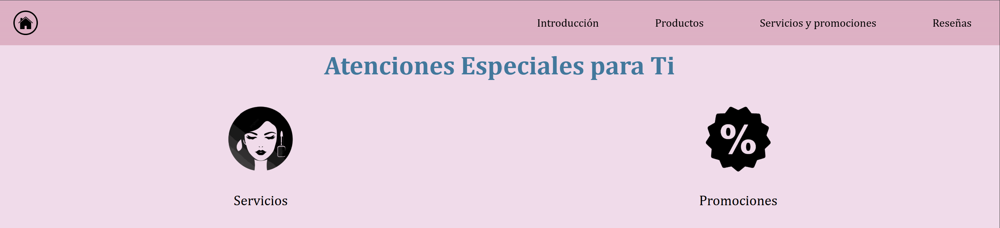
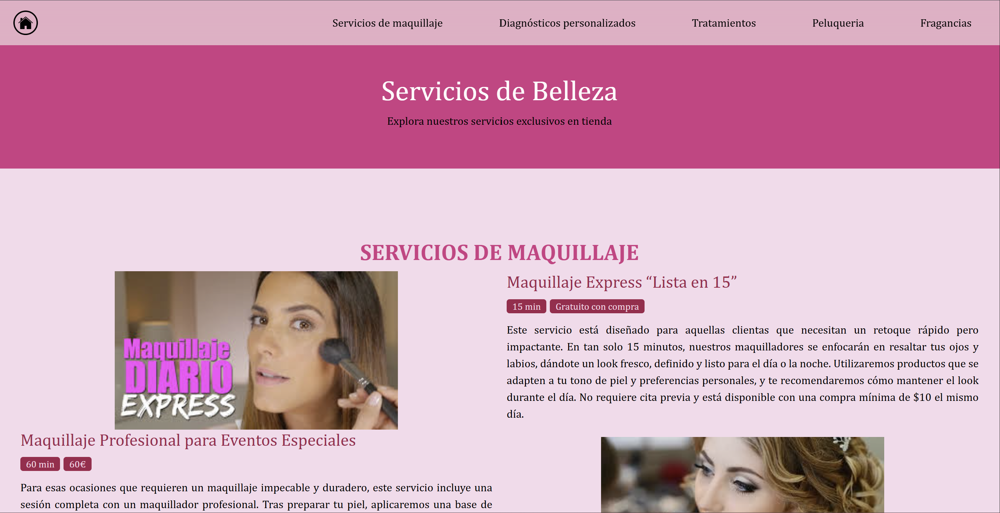
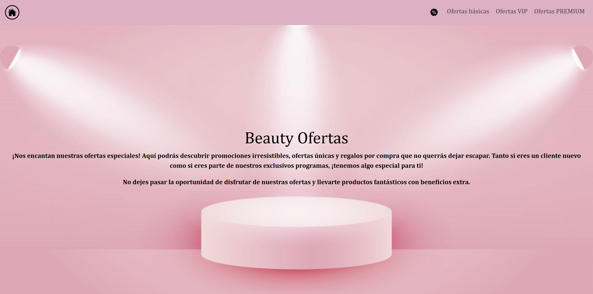
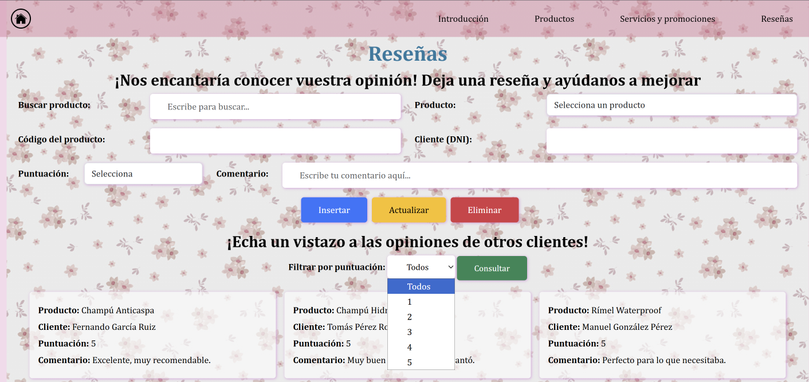

PROYECTO ACADÉMICO · GRADO EN ESTADÍSTICA · UNIVERSIDAD DE SEVILLA
Desarrollo web: tienda de cosméticos
Diseño y desarrollo de una aplicación web para una tienda de cosméticos, combinando tecnologías frontend y backend e integrando una base de datos relacional mediante PHP y PDO.
Descripción del proyecto
Proyecto centrado en el diseño y desarrollo de una aplicación web para una cadena de tiendas de cosméticos, con una interfaz inspirada en plataformas de comercio electrónico del sector.
La aplicación permite explorar productos y categorías, realizar búsquedas, consultar servicios y promociones, así como gestionar reseñas de clientes. También incorpora una base de datos relacional desarrollada previamente en el proyecto de Diseño de Bases de Datos.
Desarrollo del proyecto
1. Página principal y navegación
La página principal actúa como punto de acceso a las distintas funcionalidades de la aplicación. Desde ella es posible navegar por las secciones de introducción, catálogo de productos, servicios, promociones y gestión de reseñas.
Además, el apartado "Nuestra Base de Datos" proporciona acceso al módulo de administración de la información, mientras que la sección "Conócenos" permite consultar información sobre las tiendas, proveedores, empleados y profesionales especializados que asesoran a los clientes en la elección de productos adecuados para cada tipo de piel o cabello.

2. Gestión de la información almacenada
La aplicación incorpora un módulo de administración accesible desde el apartado "Nuestra Base de Datos" de la página principal.
Desde esta sección es posible gestionar los registros relacionados con productos, empleados y clientes mediante operaciones de inserción, actualización y eliminación. Estas funcionalidades permiten modificar la información almacenada en la base de datos desde la propia aplicación.

3. Catálogo y búsqueda de productos
La aplicación incorpora un catálogo de productos organizado en distintas categorías, lo que facilita la navegación y consulta de los artículos disponibles.
Los usuarios pueden acceder directamente a los productos a través de las categorías disponibles (perfumes, maquillaje, cuidado corporal, cuidado facial y cuidado capilar) o utilizar el buscador integrado para localizar artículos específicos.
El sistema permite realizar búsquedas empleando diferentes criterios, como el nombre del producto, la marca o el tipo de piel o cabello al que está destinado, facilitando así la localización de la información almacenada.

4. Integración de la base de datos relacional
Para el desarrollo de la aplicación se reutilizó la base de datos relacional diseñada y desarrollada previamente en el proyecto de Diseño de Bases de Datos.
La base de datos, gestionada mediante MySQL, contiene la información de la tienda organizada en tablas relacionadas. Su integración permitió aprovechar el diseño realizado anteriormente y utilizar la información almacenada en las distintas funcionalidades de la aplicación web.
El archivo de la base de datos, denominado tienda_BD.sql, se encuentra en la carpeta adj del proyecto.
5. Desarrollo backend y conexión con PHP
El desarrollo backend de la aplicación se realizó mediante PHP, estableciendo la comunicación entre la interfaz web y la base de datos MySQL a través de PDO (PHP Data Objects).
Se implementaron consultas SQL para recuperar, insertar, actualizar y eliminar información, permitiendo gestionar de forma dinámica los productos, clientes, empleados, proveedores, profesionales y reseñas.
Para ello se desarrollaron distintos módulos PHP encargados de gestionar las categorías de productos, las búsquedas, las promociones, los proveedores, los empleados, los profesionales y las opiniones de los clientes.
6. Servicios y promociones
La aplicación incorpora una sección específica dedicada a los servicios y promociones ofrecidos por la cadena de tiendas de cosméticos, donde los usuarios pueden consultar información sobre los distintos tratamientos y ofertas disponibles.
El apartado de servicios reúne diferentes categorías relacionadas con el cuidado personal, incluyendo servicios de maquillaje, diagnósticos personalizados, tratamientos estéticos, peluquería y asesoramiento en fragancias.
Asimismo, la aplicación incluye una sección de promociones donde se presentan diferentes ofertas comerciales, permitiendo consultar descuentos y ventajas asociadas a cada promoción.



7. Gestión de reseñas de clientes
La aplicación incorpora un sistema de gestión de reseñas que permite a los clientes registrar sus opiniones sobre los productos disponibles en la tienda.
A través de esta sección es posible insertar nuevas reseñas, actualizar opiniones existentes y eliminar aquellas que se deseen retirar. Cada reseña queda asociada a un producto y a un cliente registrado en el sistema.
Además, la aplicación permite consultar las reseñas almacenadas en la base de datos y filtrarlas según la puntuación asignada, facilitando la consulta de las valoraciones realizadas por los clientes.

Resultados
Se desarrolló una aplicación web para una tienda de cosméticos que integra una interfaz de usuario con funcionalidades de consulta, búsqueda y gestión de información.
El proyecto permitió conectar una base de datos relacional con una aplicación web mediante PHP, PDO y MySQL, implementando operaciones para consultar y modificar los datos almacenados.
Asimismo, se aplicaron conocimientos de desarrollo frontend y backend, programación web, consultas SQL y gestión de bases de datos, integrando en una misma aplicación los conocimientos adquiridos en distintos trabajos académicos.
Herramientas utilizadas
¿Cómo ejecutar el proyecto?
La aplicación necesita un entorno local con XAMPP para funcionar. Es necesario iniciar los servicios Apache y MySQL, copiar la carpeta del proyecto dentro del directorio htdocs e importar en phpMyAdmin el archivo de la base de datos tienda_BD.sql, situado en la carpeta adj.
Una vez configurados los datos de conexión a la base de datos, se puede acceder a la aplicación desde el navegador mediante la dirección localhost, utilizando el nombre de la carpeta del proyecto.